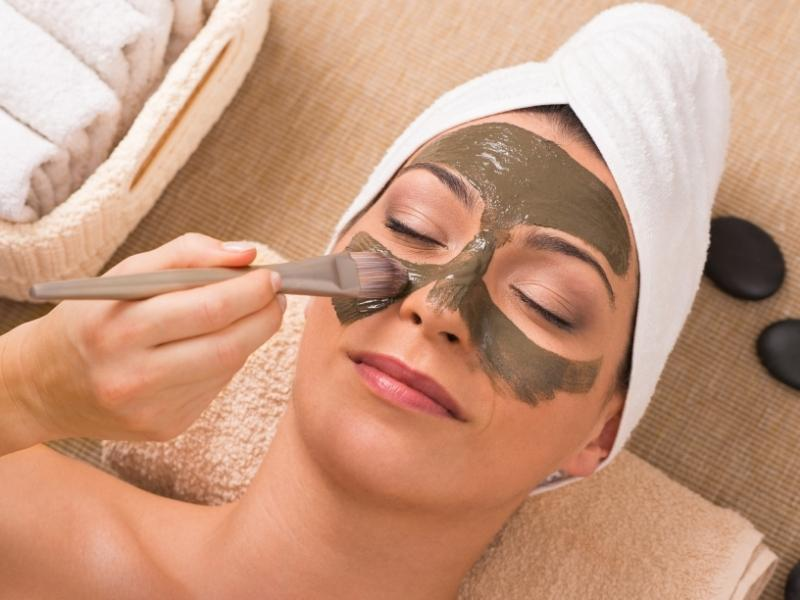

Agende Uma SessãoCuidado cosmético que combina a aplicação de argila com hidratação por meio de parafina cosmética. Os produtos são selecionados de acordo com a região e as características da pele. Antes da sessão, o profissional deve verificar sensibilidades, alergias e se o uso de calor é adequado.
A pele é higienizada e avaliada antes da aplicação. A argila cosmética é preparada e aplicada na área combinada; depois da remoção, pode ser utilizada parafina cosmética em temperatura confortável para auxiliar na hidratação. O profissional acompanha a pele durante todo o processo e interrompe a aplicação caso surja desconforto.